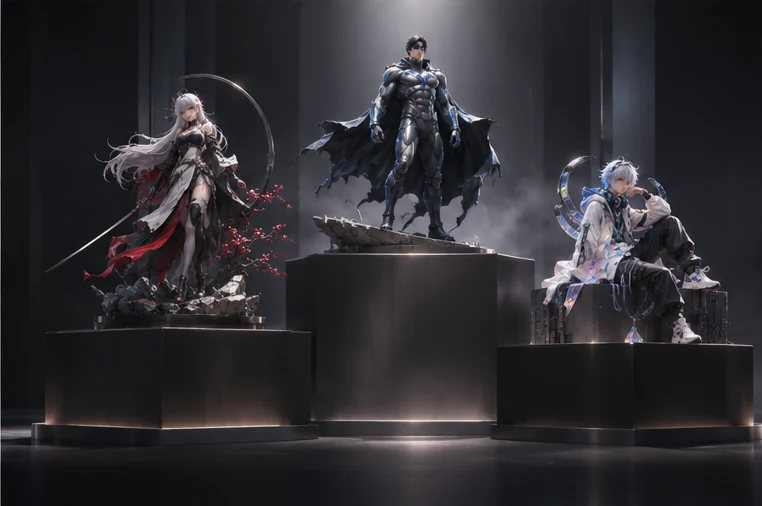

05 / THE PROCESSFRAMEVERSE — 2026
Every surface tells a story.
A closer look at how light, material and presentation shape the experience of collecting.

FORM / MATERIAL / LIGHTTHE LANGUAGE OF THE OBJECT
01 / MATERIAL
Built to last.
From resin and polystone to PVC and mixed media, the visual weight of a figure begins with what it is made of. Scale, surface and silhouette come together to create an unmistakable physical presence.
02 / FINISH
Color with intention.
Subtle transitions, layered paint and the difference between matte and gloss turn a sculpt into an object with personality. Small choices leave the biggest impression.
03 / PRESENTATION
Own the frame.
Display is part of the story. The pedestal, lighting angle and space around an object affect how it is seen. Explore our original image archive through a gallery-first perspective.
COLLECTORS / FIELD NOTES
Care beyond the box.
Practical guidance for display, lighting, storage and preservation.
Explore resources ↗